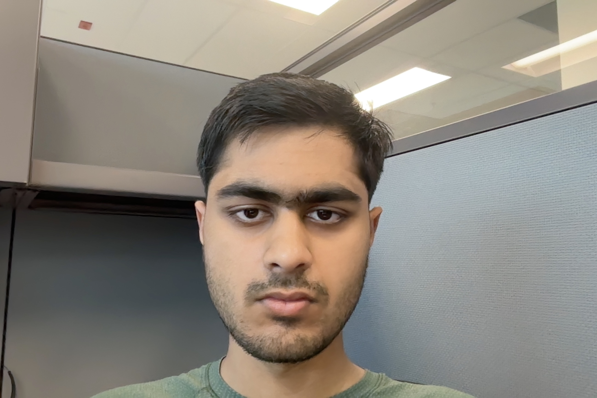

Ibrahim Kashif's Resume

Summary
Hi my name is Ibrahim Kashif I am 4th year Computer Science student at the
University of Waterloo.
Education
-
Artesian Drive Public School
-
LGS JT
-
University of Waterloo
Work Experiences
-
Ford (Sept - Dec 2023)
-
Ford (May - Aug 2024)
Skills
- C++
- C
- Python
- JavaScript
- TypeScript
- Linux
- CSS
- HTML
Achievements
-
Presidential Scholarship (2021)
-
Term Distinction (Fall 2021, Winter 2022, Fall 2022, Winter 2023, Summer 2023, Winter 2024)
Hobbies
Contact Information